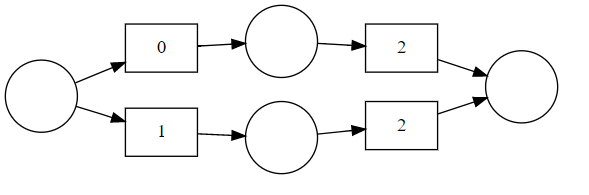

PNML¶
Note
Depreciated
Requirments¶
the first place/node is named
sourcethe last place/node is named
sink
<place id="source">
<name>
<text>source</text>
</name>
</place>
<place id="sink">
<name>
<text>sink</text>
</name>
</place>
the transistions are equal to processes
the places/nodes are equal to product states
the transition name is equal to a process id
<transition id="t_0">
<name>
<text>0</text>
</name>
</transition>
the first and last node are only sink or source
2 nodes are only connected through a transistion
<arc id="-9223371911101903288" source="p2" target="name_4"/>
<arc id="-9223371911101903192" source="name_4" target="sink"/>
Example¶
examples are available in example/config/*.pnml

<?xml version='1.0' encoding='UTF-8'?>
<pnml>
<net id="net1" type="http://www.pnml.org/version-2009/grammar/pnmlcoremodel">
<page id="n0">
<place id="p1">
<name>
<text>p1</text>
</name>
</place>
<place id="sink">
<name>
<text>sink</text>
</name>
</place>
<place id="source">
<name>
<text>source</text>
</name>
</place>
<place id="p2">
<name>
<text>p2</text>
</name>
</place>
<transition id="name_4">
<name>
<text>2</text>
</name>
</transition>
<transition id="name_3">
<name>
<text>2</text>
</name>
</transition>
<transition id="name_1">
<name>
<text>0</text>
</name>
</transition>
<transition id="name_2">
<name>
<text>1</text>
</name>
</transition>
<arc id="-9223371911093448760" source="source" target="name_2"/>
<arc id="-9223371911093575928" source="name_1" target="p1"/>
<arc id="-9223371911101903288" source="p2" target="name_4"/>
<arc id="-9223371911101903192" source="name_4" target="sink"/>
<arc id="-9223371911093241972" source="source" target="name_1"/>
<arc id="-9223371911101903316" source="name_2" target="p2"/>
<arc id="-9223371911101903156" source="name_3" target="sink"/>
<arc id="-9223371911101903308" source="p1" target="name_3"/>
</page>
</net>
</pnml>